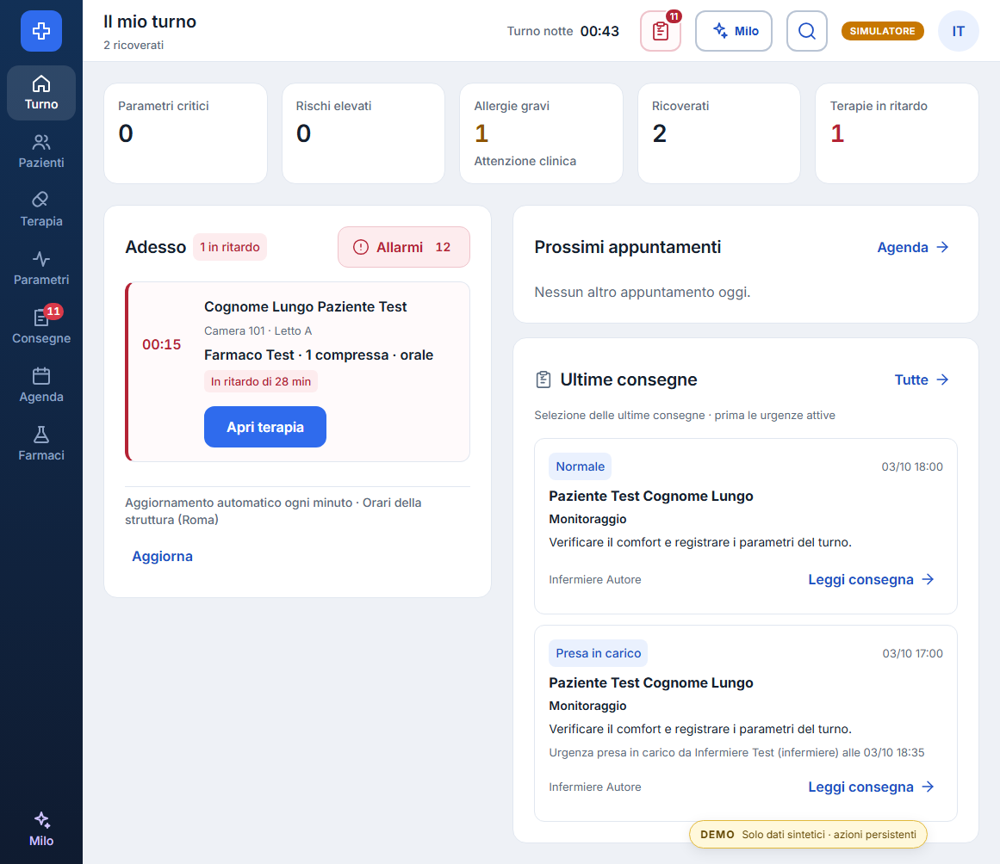
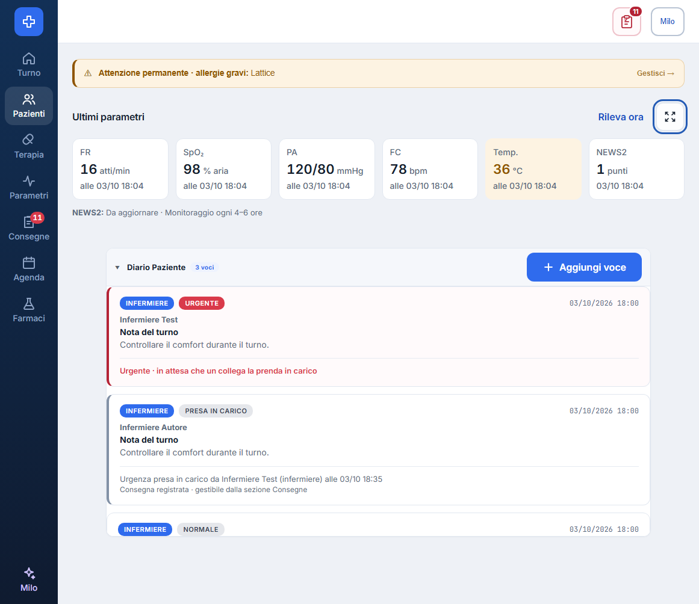

READY FOR CODEX QA
Commit finale b0a44892f0e5f358f658670da41d75a555aae96c. Runtime eseguito autonomamente sul commit applicativo identico d445bf68; modifica finale limitata a una regex di test. Tutti i dati sono sintetici e tutte le API sono intercettate.
| Capacità | Esito concreto |
|---|---|
| Consegne e contatori | Anteprima deduplicata di 2 con totale 12; fallimento conserva 12; Ho capito riuscito aggiorna entrambe le voci a 11; conferma storica dopo reload; autore escluso. |
| Parametri e diario | 6 card compatte alte 102 px; dialogo espandibile, scorrimento, focus, Escape e ritorno focus; badge Completata assente. |
| Responsive | Nessun overflow a 390, 768, 1161, 1575 px; navigazione mobile chiusa fuori schermo; accesso critiche visibile. |
| Adesso | Terapia simulata in ritardo separata dall'urgenza, nome completo e azione leggibile a 390, 1161, 1575 px. |
| Disponibilità | 503 intenzionali gestiti con errore e Riprova; zero errori console inattesi. |
| Build e unit | TypeScript/Vite PASS, 660 moduli; test finali 59 PASS/0 FAIL. |
Risultati raw e richieste · Trace Playwright · Video · 59 test · Build · Rapporto completo


Turno a390px · Cartella a390px
Rapporto HTML statico generato dal revisore a partire dalle asserzioni del runner Playwright e dai suoi artefatti; nessuna persistenza nel database reale è dichiarata.